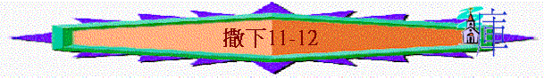

|
成 敗 與 興 衰 |
||
|
事
奉 |
民
族 |
君
王 |
|
撒上1-3 |
撒上4-7 |
撒上8-撒下24 |
丙.君王的興衰(撒上8-撒下24)
二.大衛的興衰(撒上16-撒下24)
Ⅳ.大衛失意的時期(撒下11-21
1.大衛犯罪(11-12)
A.犯罪
a.沒有儆醒
「過了一年，到列王出戰的時候，大衛又差派約押，率領臣僕和以色列眾人出戰。他們就打敗亞捫人，圍攻拉巴。大衛仍住在耶路撒冷。一日，太陽平西，大衛從床上起來，在王宮的平頂上遊行，看見一個婦人沐浴，容貌甚美，」11:1-2
「耶和華啊，早晨你必聽我的聲音；早晨我必向你陳明我的心意，並要警醒！」詩5:3
∼「拉巴」是古亞捫人的首都
∼大衛在爭戰中仍安穩在耶路撒冷，而他曾在詩5中表達他每早晨會儆醒禱告，但今次他沒有了，他在太陽平西才起來
b.情慾縱容
「一日，太陽平西，大衛從床上起來，在王宮的平頂上遊行，看見一個婦人沐浴，容貌甚美，大衛就差人打聽那婦人是誰。有人說：「他是以連的女兒，赫人烏利亞的妻拔示巴。」」撒下11:2-3
∼他看見一女子沐浴，他見到她容貌甚美，也差人打聽那婦人是誰，明顯他是注意留心那女子，沒有刻意逃避私慾，反而主動任憑自己的慾念繼續注目那女子情況
c.不念情義
「大衛就差人打聽那婦人是誰。有人說：「他是以連的女兒，赫人烏利亞的妻拔示巴。」」11:2-3
「瑪迦人亞哈拜的兒子以利法列，基羅人亞希多弗的兒子以連，」23:34
「押沙龍獻祭的時候，打發人去將大衛的謀士、基羅人亞希多弗從他本城請了來。於是叛逆的勢派甚大；因為隨從押沙龍的人民，日漸增多。」15:12
「那時亞希多弗所出的主意好像人問神的話一樣；他昔日給大衛，今日給押沙龍所出的主意，都是這樣。」16:23
「赫人烏利亞、共有三十七人。」23:39
∼拔示巴的父親是以連，是大衛三十勇士的其中一位，而以連的父親是亞希多弗，他是大衛的謀士
∼烏利亞也是三十勇士之一，但大衛知道他們的關係後，沒有念軍臣將兵的情義，仍要佔步下之妻
d.不顧後果
「大衛差人去，將婦人接來；那時他的月經才得潔淨。他來了，大衛與他同房，他就回家去了。」11:4
∼「月經才得潔淨」應是拔示巴行經後過了七日之後的事
∼女性在此段時間開始很易受孕，大衛知道仍與她同房，不理會有很大受孕的結果
e.犯了姦淫
B.再犯
a.掩飾
「於是他懷了孕、打發人去告訴大衛說、我懷了孕。」11:5
「大衛對烏利亞說：「你回家去，洗洗腳吧！」烏利亞出了王宮，隨後王送他一分食物。」11:8
「有人告訴大衛說：「烏利亞沒有回家去。」大衛就問烏利亞說：「你從遠路上來，為什麼不回家去呢？」烏利亞對大衛說：「約櫃和以色列與猶大兵都住在棚裡，我主約押和我主（或作：王）的僕人都在田野安營，我豈可回家吃喝、與妻子同寢呢？我敢在王面前起誓（原文作我指著王和王的性命起誓）：我決不行這事！」」11:10-11
「大衛召了烏利亞來，叫他在自己面前吃喝，使他喝醉。到了晚上，烏利亞出去與他主的僕人一同住宿，還沒有回到家裡去。」11:13
∼大衛想用諸般方法，叫烏利亞回家，使烏利亞可以與妻子同房來掩飾大衛令烏利亞受孕的事
∼但烏利亞為人忠誠，他仍忠於自己崗位，不願回家
b.毒謀
(1)惡謀設局
「次日早晨，大衛寫信與約押，交烏利亞隨手帶去。信內寫著說：「要派烏利亞前進，到陣勢極險之處，你們便退後，使他被殺。」」11:14-15
(2)借刀殺人
「約押圍城的時候，知道敵人那裡有勇士，便將烏利亞派在那裡。城裡的人出來和約押打仗；大衛的僕人中有幾個被殺的，赫人烏利亞也死了。」11:16-17
(3)裝作慰問
「使者對大衛說：「敵人強過我們，出到郊野與我們打仗，我們追殺他們，直到城門口。射箭的從城上射王的僕人，射死幾個，赫人烏利亞也死了。」王向使者說：「你告訴約押說：『不要因這事愁悶，刀劍或吞滅這人或吞滅那人，沒有一定的；你只管竭力攻城，將城傾覆。』可以用這話勉勵約押。」」11:23-25
c.奪妻
「烏利亞的妻聽見丈夫烏利亞死了，就為他哀哭。哀哭的日子過了，大衛差人將他接到宮裡，他就作了大衛的妻，給大衛生了一個兒子。但大衛所行的這事，耶和華甚不喜悅。」11:26-27
C.受責
a.耶和華主動差遣
「耶和華差遣拿單去見大衛。拿單到了大衛那裡，對他說：「在一座城裡有兩個人：一個是富戶，一個是窮人。」12:1
b.神僕勇敢的指控
(1)奪人羊羔的比喻
「窮人除了所買來養活的一隻小母羊羔之外，別無所有。羊羔在他家裡和他兒女一同長大，吃他所吃的，喝他所喝的，睡在他懷中，在他看來如同女兒一樣。有一客人來到這富戶家裡；富戶捨不得從自己的牛群羊群中取一隻預備給客人吃，卻取了那窮人的羊羔，預備給客人吃。」大衛就甚惱怒那人，對拿單說：「我指著永生的耶和華起誓，行這事的人該死！」12:3-5
(2)奪人妻子的指控
「拿單對大衛說：「你就是那人！耶和華以色列的神如此說：『我膏你作以色列的王，救你脫離掃羅的手。」12:7
∼拿單用以上比喻直斥大衛如同奪羊羔的富戶，奪去別人所愛的人
∼而大衛在此件事上，反映了以下事情：
(A)不滿足
「我將你主人的家業賜給你，將你主人的妻交在你懷裡，又將以色列和猶大家賜給你；你若還以為不足，我早就加倍地賜給你。」12:8
(B)藐視神
「你為什麼藐視耶和華的命令，行他眼中看為惡的事呢？你借亞捫人的刀殺害赫人烏利亞，又娶了他的妻為妻。」12:9
(C)行惡事
D.受罰
a.因果的報應
(1)殺害人丈夫 → 遭刀劍不離
「你既藐視我，娶了赫人烏利亞的妻為妻，所以刀劍必永不離開你的家。』」12:10
(2)奪去人妻子 → 妃嬪賜別人
「耶和華如此說：『我必從你家中興起禍患攻擊你；我必在你眼前把你的妃嬪賜給別人，他在日光之下就與他們同寢。」12:11
(3)破壞人家庭 → 家中興禍患
b.加倍的管教
「你在暗中行這事、我卻要在以色列眾人面前、日光之下、報應你。」12:12
「只是你行這事，叫耶和華的仇敵大得褻瀆的機會，故此，你所得的孩子必定要死。」」12:14
∼大衛在暗中行惡，神要他在以色列眾人前及日光下報應他
∼而大衛所得的孩子也必定死
D.認罪
a.真誠的認罪
(1)不找藉口
「大衛對拿單說：「我得罪耶和華了！」拿單說：「耶和華已經除掉你的罪，你必不至於死。」12:13
∼掃羅犯了罪，會用許多說話掩飾他的罪行(可參考撒上15:14-15)，但大衛遭指責後，沒有找藉口
(2)坦白承認
「因為，我知道我的過犯；我的罪常在我面前。」詩51:3
(3)知得罪誰
「我向你犯罪，惟獨得罪了你；在你眼前行了這惡，以致你責備我的時候顯為公義，判斷我的時候顯為清正。」詩51:4
(4)懇求憐恤
「（大衛與拔示巴同室以後，先知拿單來見他；他作這詩，交與伶長。）神啊，求你按你的慈愛憐恤我！按你豐盛的慈悲塗抹我的過犯！」詩51:1
「拿單就回家去了。耶和華擊打烏利亞妻給大衛所生的孩子，使他得重病。所以大衛為這孩子懇求神，而且禁食，進入內室，終夜躺在地上。」撒下12:15-16
「到第七日，孩子死了。大衛的臣僕不敢告訴他孩子死了，因他們說：「孩子還活著的時候，我們勸他，他尚且不肯聽我們的話，若告訴他孩子死了，豈不更加憂傷嗎？」」12:18
(5)接受管教
「大衛說：「孩子還活著，我禁食哭泣；因為我想，或者耶和華憐恤我，使孩子不死也未可知。孩子死了，我何必禁食，我豈能使他返回呢？我必往他那裡去，他卻不能回我這裡來。」」12:22-23
b.父神的憐恤
(1)不至於死
「大衛對拿單說：「我得罪耶和華了！」拿單說：「耶和華已經除掉你的罪，你必不至於死。」12:13
(2)再蒙憐愛
「大衛安慰他的妻拔示巴，與他同寢，他就生了兒子，給他起名叫所羅門。耶和華也喜愛他，就藉先知拿單賜他一個名字，叫耶底底亞，因為耶和華愛他。」12:24-25
∼大衛與拔示巴之後生了一個兒子名所羅門，他另有一個名字叫「耶底底亞」，意思是「被耶和華所愛」
∼從此兒子可看到大衛雖犯罪，但神仍有憐恤，仍愛他的家庭，賜下所羅門給他們
(3)仍得榮耀
「約押攻取亞捫人的京城拉巴。約押打發使者去見大衛，說：「我攻打拉巴，取其水城。現在你要聚集其餘的軍兵來，安營圍攻這城，恐怕我取了這城，人就以我的名叫這城。」於是大衛聚集眾軍，往拉巴去攻城，就取了這城，奪了亞捫人之王所戴的金冠冕（王：或作瑪勒堪；瑪勒堪就是米勒公，又名摩洛，亞捫族之神名），其上的金子重一他連得，又嵌著寶石。人將這冠冕戴在大衛頭上。大衛從城裡奪了許多財物，」12:26-30
∼約押雖能攻取拉巴，但也將榮耀歸給大衛，最後由大衛攻拉巴